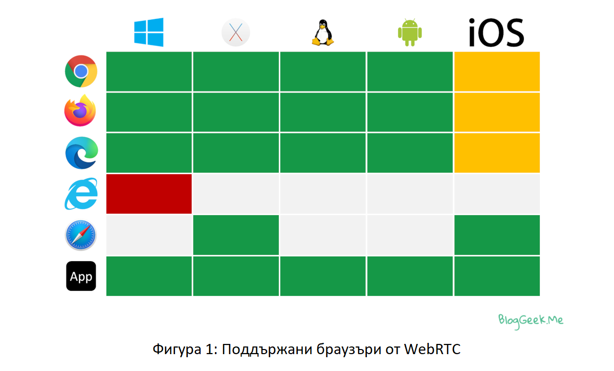
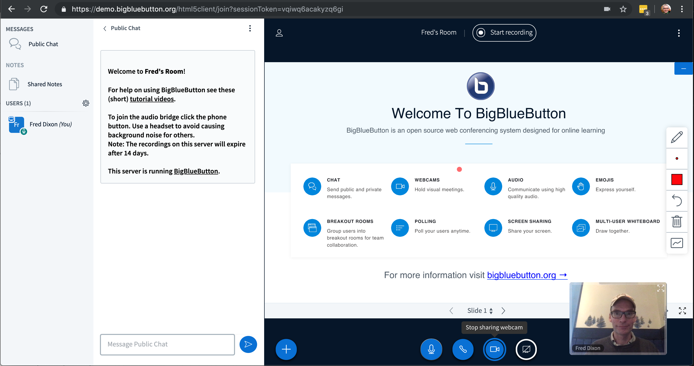
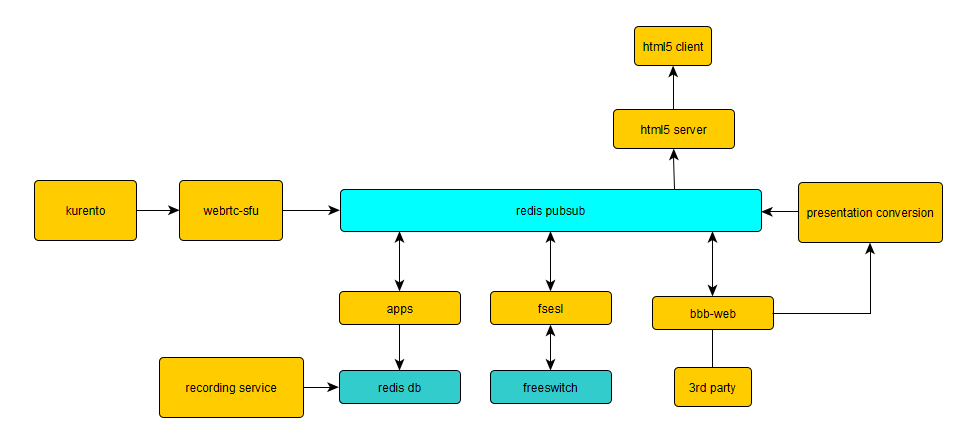
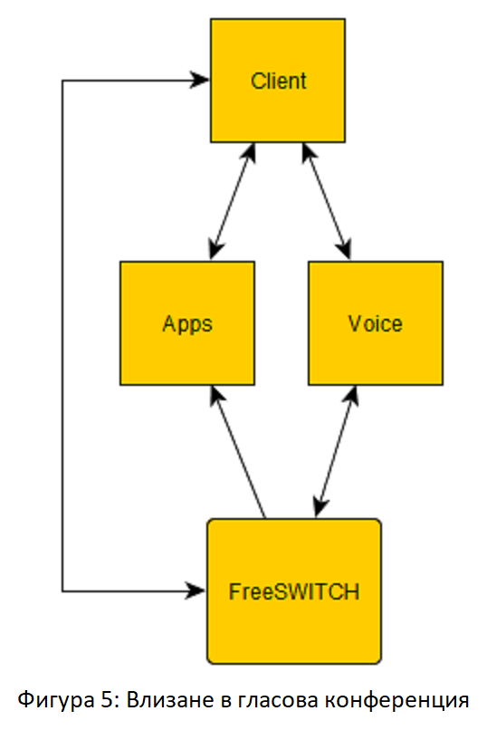

Съдържание
- Въведение
- Как работи WebRTC?
- Защо WebRTC е добър избор за комуникация в реално време?
- Какви са плюсовете и минусите на WebRTC?
- За какво се използва WebRTC?
- WebRTC сигурен ли е?
- Алтернативи на WebRTC
- Пример за платформа, използваща WebRTC – BigBlueButton
- Малко код
1. Въведение
Какво е WebRTC?
WebRTC е HTML5 спецификация, която може да се използва за добавяне на медийни комуникации в реално време директно между браузър и устройства. Абревиатурата в името означава "Real Time Communication". [1]
Просто казано:
WebRTC дава възможност за гласова и видео комуникация да работят в уеб страници без да са необходими никакви предпоставки за инсталиране на плъгини в браузъра. [1]
Инструментът е представен през 2011 г. и оттогава постоянно нараства популярността и приемането. Той поддържа видео, глас и общи данни за изпращане между пиъри, което позволява на разработчиците да изграждат гъвкави решения за гласова и видео комуникация. Технологията е достъпна за всички съвременни браузъри, както и за собствени клиенти за всички основни платформи. [2]
Технологиите зад WebRTC са внедрени като отворен уеб стандарт и са налични като обикновени JavaScript API във всички основни браузъри. За собствени клиенти, като приложения за Android и iOS, е налична библиотека, която предоставя същата функционалност. Проектът WebRTC е с отворен код и се поддържа от Apple, Google, Microsoft и Mozilla, наред с други. Тази страница се поддържа от екипа на Google WebRTC. [2]
2. Как работи WebRTC?
Код и API
Важно е да разберем откъде идваме: Ако преди няколко години сте искали да създадете нещо, което позволява гласови или видео разговори, най-вероятно сте използвали C/C++ за това. Това означава дълги цикли на разработка и по-високи разходи за разработка.
WebRTC променя всичко това: отнема необходимостта от C/C++ и го заменя с Javascript API.
Той идва с Javascript API слой отгоре, който можете да използвате в браузъра. Това прави много по-лесно разработването и интегрирането на комуникации в реално време навсякъде. Вътрешно WebRTC все още се прилага предимно с помощта на C/C++, но повечето разработчици, които използват WebRTC, няма да трябва да копаят дълбоко в тези слоеве, за да разработят своите приложения. [1]
Наличност и поддръжка на различни платформи
WebRTC днес е наличен във всички съвременни браузъри. Поддържат го Google Chrome, Mozilla Firefox, Apple Safari и Microsoft Edge.
Можете също да го „вземете“ и да го интегрирате в приложение или вградено устройство, без изобщо да имате нужда от браузър. [1]
Медия и достъп
Това, което прави WebRTC, е да позволява достъп до устройства. Можете да получите достъп до микрофона на вашето устройство, камерата, която имате на вашия телефон или лаптоп – или може да бъде самият екран. Можете да заснемете дисплея на потребителя и след това този екран да бъде споделен или записан от разстояние.
Каквото и да прави, е в реално време, позволявайки взаимодействия на живо.
WebRTC не се ограничава до глас и видео. Позволява изпращане на всякакъв вид произволни данни. [1]
3. Защо WebRTC е добър избор за комуникация в реално време?
Първо, WebRTC е open-source проект
- Напълно безплатен е
- Постоянно еволюиращ и подобряващ се
- Солиден избор поради широката екосистема и компании поддръжници, които могат да помогнат с имплементацията
Наличен е на всички модерни браузъри
- Това позволява създаване на нови случаи на употреба и бизнес модели
- От вземане на урок по китара или йога – до облачни игри и социални мрежи – до медицински клоуни или групова терапия – до провеждане на мащабни професионални уебинари и предавания на живо; WebRTC е в състояние да обслужва всички тях и повече
WebRTC не е ограничен само до браузъри, защото може да се имплементира и в мобилни апликации
- Source кодът е преносим и вече се използва в редица мобилни приложения
- Инструментите за разработка на софтуер (SDK) са налични и за мобилни, и за embedded устройства, така че WebRTC може да се използва навсякъде
WebRTC не е полезен само за гласови или видео разговори
- Той е доста мощен и универсален инструмент
- Може да се използва, за да се създаде услуга за групови обаждания, да добавите запис към нея или да се използва само за доставка на данни
WebRTC приема понятието комуникационна услуга и я понижава до функция в различен тип услуга.
Така че сега можете да го вземете и просто да добавите комуникация в бизнес процеси, от които се нуждаете в рамките на вашето приложение или бизнес. [3]
4. Какви са плюсовете и минусите на WebRTC?
Предимствата на WebRTC включват следното:
- елиминира голяма част от вътрешната ръчна интеграция, изисквана от ИТ;
- може да регулира качеството на комуникацията, честотната лента и потока на трафика, когато условията на мрежата се променят;
- се поддържа от повечето основни уеб браузъри, включително Google Chrome за настолни компютри и Android, Mozilla Firefox за настолни компютри и Android и Safari;
- работи на всяка операционна система, стига браузърът да поддържа WebRTC;
- не изисква компоненти или плъгини на трети страни; и
- е безплатен като софтуер с отворен код. [3]
5. За какво се използва WebRTC?
Целта на WebRTC е да улесни P2P комуникациите в реално време през интернет. Има няколко случая на използване на WebRTC, включително следното:
- WebRTC се използва за видео чатове и срещи на платформи за видео разговори, като Zoom, Microsoft Teams, Slack или Google Meet.
- Индустрии, включително здравеопазване, наблюдение и мониторинг и интернет на нещата, използват WebRTC. Например, използването на WebRTC в телемедицината позволява на лекарите да провеждат виртуални посещения в офис с пациент през уеб браузър.
- В областта на домашната и бизнес сигурността и наблюдението, WebRTC се използва като свързващ агент между браузъри и охранителни камери.
- WebRTC се използва силно за медии в реално време.
- WebRTC осигурява основната връзка между инструктори и студенти за онлайн обучение. [3]
6. WebRTC сигурен ли е?
Всеки софтуерен компонент на WebRTC е криптиран и всеки WebRTC API изисква защитен произход чрез защитен протокол за прехвърляне на хипертекст (HTTPS) или локален хост. Въпреки това все още има отворени въпроси за сигурност, които разработчиците, използващи WebRTC, трябва да обмислят. Методите за обработка на сигнали или методите, използвани за обмен на метаданни, не са посочени за WebRTC сигнализиране. Това означава, че разработчиците трябва да решат кои протоколи за сигурност да използват и да гарантират, че избраните от тях протоколи могат да се поддържат с WebRTC. [3]
7. Алтернативи на WebRTC
Една от най-известните платформи от началото на века е Skype.
Skype е приложение, предназначено за провеждане на аудио и видео разговори, както и за обмен на текстови съобщения или файлове през Интернет. Първата версия на това приложение е пусната през 2003 г. и първоначално е адаптирана само за гласова комуникация. Като една от първите платформи, които прилагат технологията VoIP (Voice over Internet Protocol), тя придобива невероятна популярност. Според съобщението на Microsoft, направено на конференцията Build 2016, Skype все още има над 300 милиона активни потребители месечно. Като се има предвид, че Skype може да се използва на настолен компютър, мобилен телефон или през уеб браузър, няма нищо изненадващо, че това е очевидният избор в случай, че искате да се обадите на Вашия клиент или колега от другия край на земята.
WebRTC, от друга страна, не е готово за използване приложение, а технология. Тя позволява осъществяване на комуникация в реално време чрез уеб браузър. Потребителят няма нужда да инсталира допълнителен софтуер или приставка за браузър на трета страна, за да получи възможност за обмен на текстови съобщения, файлове или за да извършва на аудио/видео разговори. Всеки разработчик ще бъде доволен от факта, че WebRTC API позволява внедряване на необходимата функционалност с минимално количество код. Тези характеристики са причината за нарастването на популярността на WebRTC. Тази технология е пусната от Google през май 2011 г. и пет години по-късно, през юни 2016 г., Google предоставя следните статистически данни:
- Два милиарда браузъра Chrome с поддръжка на WebRTC
- Един милиард WebRTC аудио и видео минути на седмица в Chrome
- 1200 WebRTC-базирани компании и проекта
- Пет милиарда изтегляния на мобилни приложения, които включват WebRTC
Според мнението на анализаторите глобалният пазар на WebRTC ще продължава да расте. Един от основните двигатели на пазара за комуникация в реално време в мрежата е голямото търсене на услуги за аудио/видео чат, достъпни без изтегляне на допълнителни плъгини. Нарастващият брой устройства, поддържащи WebRTC, доведе до тенденцията Bring Your Own Device (BYOD, донеси своето устройство). Това е нова тенденция на работните места, която насърчава служителите да използват собствените си мобилни устройства за нуждите на бизнес комуникацията.
Както можете да видите, тук говорим за подобни концепции. Тези две платформи предоставят почти еднакви услуги. Начините за предоставяне на тези услуги обаче се различават. Skype е приложение за уеб комуникация, докато WebRTC е инструмент, който позволява внедряване на функционалността, необходима за уеб комуникация. Може да изглежда, че предпочитането на WebRTC пред Skype не е много мъдър избор, тъй като предполага полагане на допълнителни усилия. Вместо да използвате Skype, с който сте запознати, ще трябва да отделите известно време за проучване и да изберете решението, което отговаря по-добре на вашите нужди сред наличните опции. Като алтернатива можете да създадете свое собствено WebRTC приложение, като използвате ресурсите на вашата компания или да наемете компания за разработка на софтуер, например. [4]
8. Пример за платформа, използваща WebRTC – BigBlueButton
BigBlueButton е система за уеб конференции с open source код за онлайн обучение. Това означава:
- Open source код - има пълен достъп до source кода на BigBlueButton под лиценз с отворен код.
- Система за уеб конференции - BigBlueButton предоставя всички основни функции, които се очакват от комерсиална система за уеб конференции (но под лиценз с отворен код), включително споделяне в реално време на аудио, видео, презентация и екран - заедно с инструменти за сътрудничество като чат (публичен и личен), бяла дъска, споделени бележки, анкети и стаи за разбивка. BigBlueButton може да записва вашите сесии за по-късно възпроизвеждане.
- Онлайн обучение – BigBlueButton разширява тези основни функции за онлайн обучение. Например, преподавателят може да отключи възможността за използване на многопотребителска бяла дъска да работи директно с ученик при решаване на математически проблем. [5]
Преглед на BigBlueButton
BigBlueButton е уеб приложение, базирано на HTML5. За разлика от много търговски системи за уеб конференции, които изискват да инсталирате софтуер, BigBlueButton работи изцяло в уеб браузър. За да се присъедини потребител към сесия на BigBlueButton, е нужно единствено да щракне върху връзка, която отваря валиден URL адрес за присъединяване във вашия браузър. Сървърът BigBlueButton получава URL адреса, потвърждава го и зарежда клиента BigBlueButton. След зареждане той незабавно ви подканва да се присъедините към аудио конференцията и да започнете да си сътрудничите. Няма плъгини за изтегляне, няма софтуер за инсталиране. BigBlueButton предоставя висококачествено аудио, видео и споделяне на екрана, като използва вградената поддръжка на браузъра за уеб библиотеки за комуникация в реално време (WebRTC). [5]
Архитектура на BigBlueButton
Обясненията по-долу са само за частите, засягащи WebRTC.
HTML5 клиент
HTML5 клиентът е едностранично, отзивчиво уеб приложение, което е изградено върху следните компоненти:
- React.js за изобразяване на потребителския интерфейс по ефективен начин
- WebRTC за изпращане/получаване на аудио и видео
HTML5 клиентът се свързва директно със сървъра BigBlueButton през порт 443 (SSL), от зареждане на клиента BigBlueButton до създаване на връзка с уеб сокет. Всички тези връзки се обработват от nginx. [6]
FreeSWITCH
FreeSWITCH предоставя възможността за гласова конферентна връзка в BigBlueButton. Потребителите могат да се присъединят към гласовата конференция чрез слушалките. Потребителите, които се присъединяват чрез Google Chrome или Mozilla Firefox, могат да се възползват от по-високо качество на звука, като се свържат чрез WebRTC. FreeSWITCH може също да бъде интегриран с VoIP доставчици, така че потребителите, които не могат да се присъединят с помощта на слушалките, ще могат да се обаждат чрез телефона си. [6]
Присъединяване към гласова конференция
Потребителят може да се присъедини към гласовата конференция (изпълняваща се във FreeSWITCH) от BigBlueButton HTML5 клиента или чрез телефона си. Когато се присъединява през клиента, потребителят може да избере да се присъедини с микрофон или само да слуша, а клиентът BigBlueButton ще направи аудио връзка със сървъра чрез WebRTC. WebRTC предоставя на потребителя висококачествен звук с по-ниско закъснение. [6]
9. Малко код
To be added soon
10. Източници
[1] https://bloggeek.me/what-is-webrtc/
[5] https://docs.bigbluebutton.org/
[6] https://docs.bigbluebutton.org/2.2/architecture.html
[7] https://fireship.io/lessons/webrtc-firebase-video-chat/
[8] https://github.com/fireship-io/webrtc-firebase-demo
Картинки:
[i1] https://upload.wikimedia.org/wikipedia/commons/thumb/6/68/WebRTC_Logo.svg/2560px-WebRTC_Logo.svg.png
{kind=link}
[i2] https://bloggeek.me/wp-content/uploads/2019/12/webrtc-browser-support.png
{kind=link}
[i3] https://docs.bigbluebutton.org/images/22-overview-2.png
{kind=link}
[i4] https://docs.bigbluebutton.org/images/10/bbb-arch-overview.png
{kind=link}
[i5] https://docs.bigbluebutton.org/images/10/joining-voice-conf.png
{kind=link}